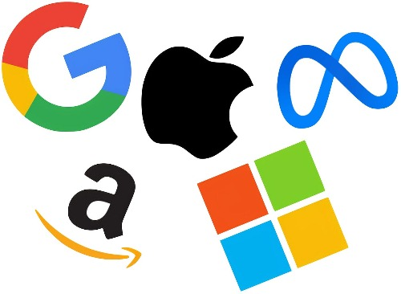
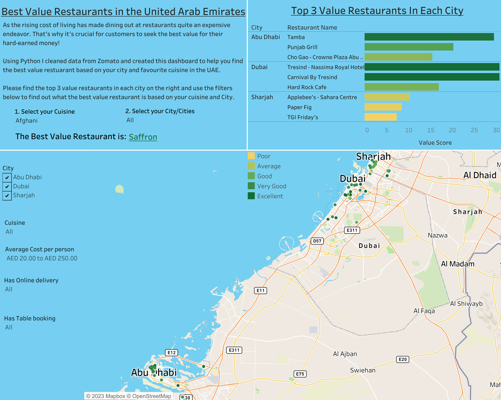
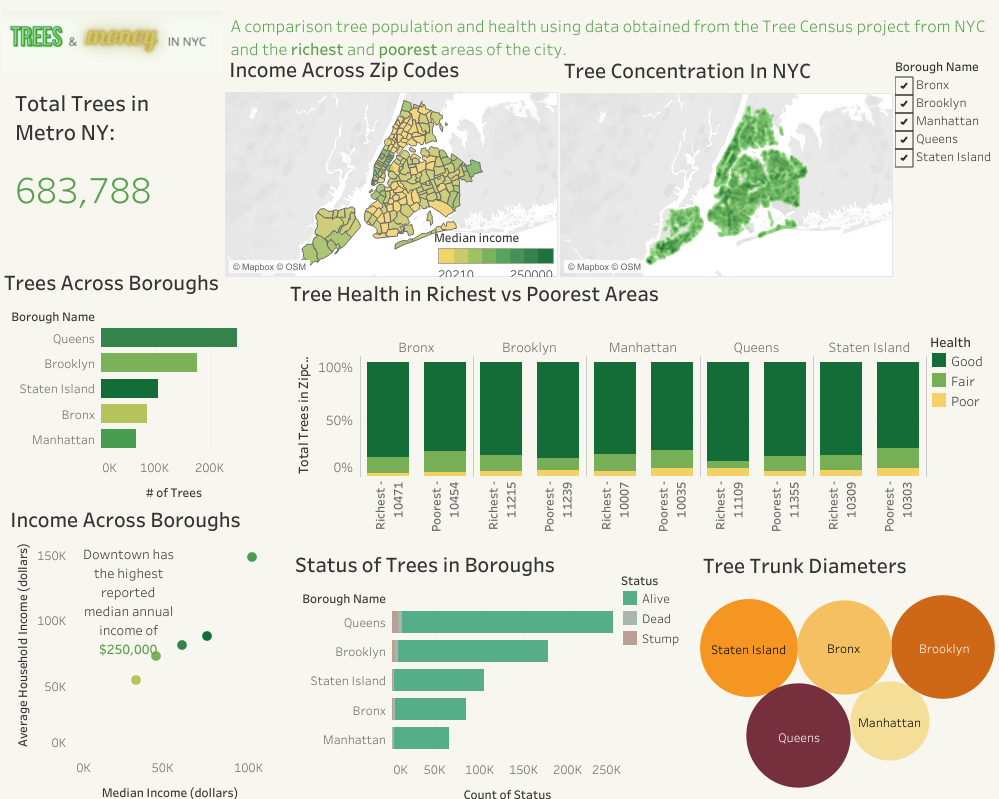
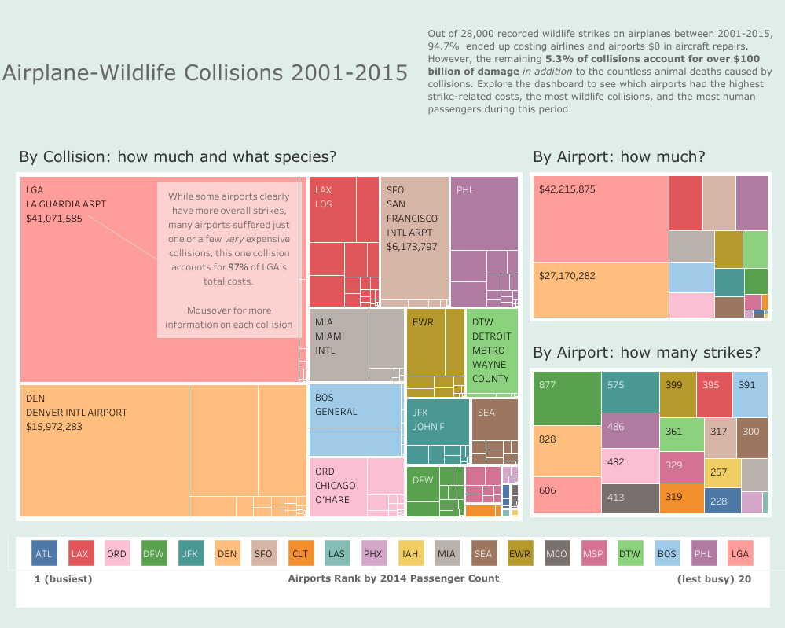

In this project I will use Pandas, Pandas-Datarader, yfinance, and Matplotlib, I will take a visual look into the similarities and differences between the top 5 tech stocks from January through May 2023 and reccomend which might be the best to invest in.

In this project I will take Zomato restaurant data from Kaggle, clean it using Python, and create a tableau dashboard showing the best value restaurant based on your city and preferred cuisine.


Trees play a crucial role in combating the issue of poor air quality in New York City (NYC). I developed a comprehensive Dashboard using Tableau that shows the concentration of trees throughout NYC. Moreover, the dashboard allows for a comparison of tree health between the wealthiest and most economically disadvantaged areas within the city.

This Dashboard finds the busiest airports and explores which had the highest strike-related costs, the most wildlife collisions, and the most human passengers during this period. Hover over each square to see what caused each collision and how expensive it was.